Front Door Window Glass: Adjustments
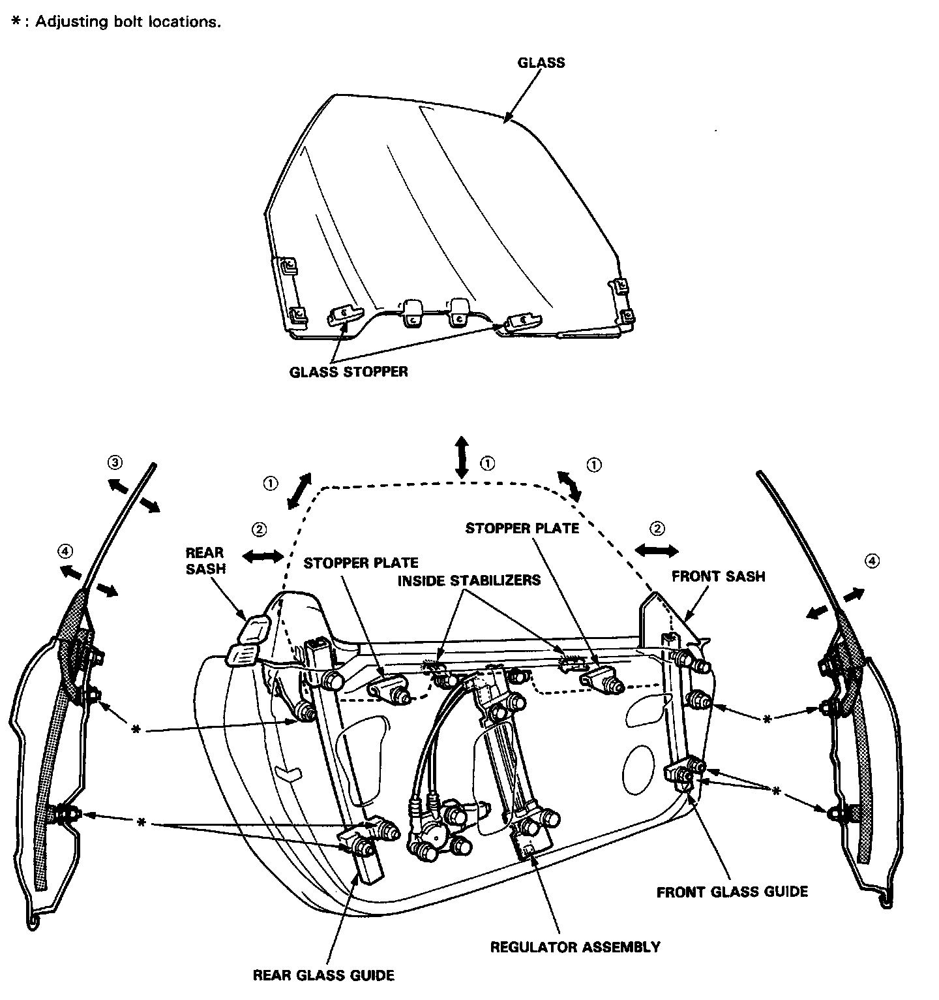
GLASS ADJUSTMENT
NOTE: Make sure the door position is adjusted properly before adjusting the glass. Doors
1. Remove the door trim. Service and Repair
2. Remove the weatherstrip. Front Door Window Glass Weatherstrip
NOTE: Check the weatherstrip for damage or deterioration and replace if necessary.
3. Remove all retainers by removing the attaching screws.
4. Remove the door panel and peel off the plastic cover. Overhaul
5. Remove the control switch panel from the door panel.
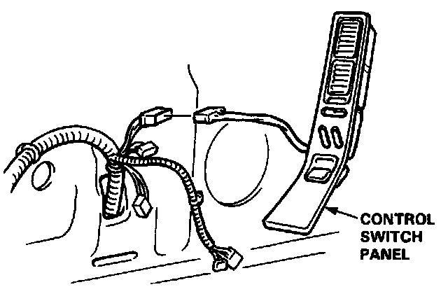
6. Connect the connector of the control switch panel to the door harness.
NOTE: Take care not to scratch or score the control switch panel.
7. Carefully close the door while holding the window glass to prevent it from contacting the body panel.
8. Close the door glass fully.
NOTE: Check the door fit to the body opening.
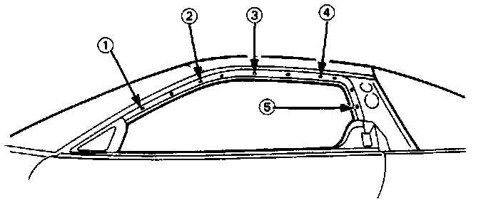
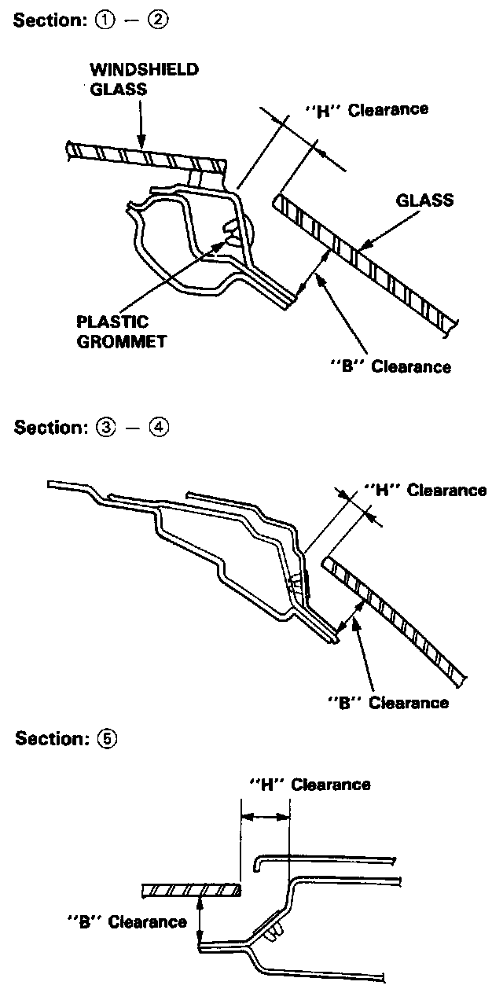
9. Measure and record the clearance "H" and "B" between the glass and body at the locations shown.
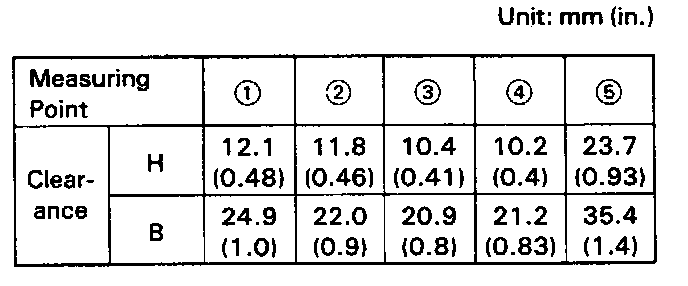
(Standard Clearance)
- Permissible tolerance: ±2 mm (0.08 in.)
10. Adjust the clearance as described in the following steps.
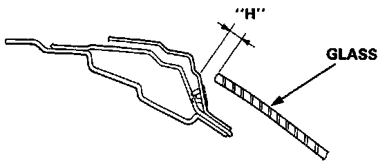
11. Adjustment of Clearance "H".
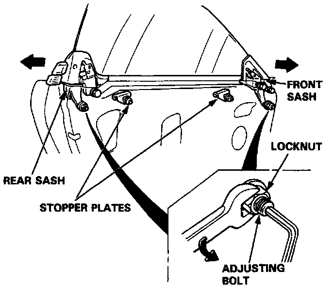
- 1 Loosen the bolts and nuts securing the front sash and rear sash, then move the front sash all the way forward and move the rear sash all the way backward.
NOTE: Hold the adjusting bolts with a hex wrench when loosening the locknuts.
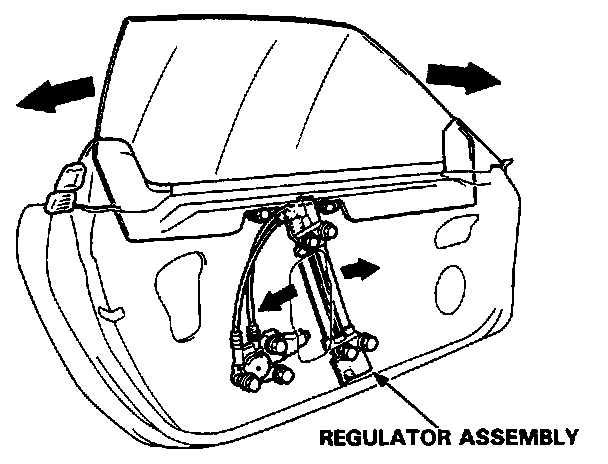
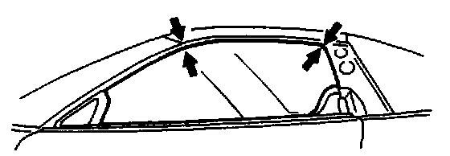
- 2 Loosen the 4 bolts securing the regulator assembly and move the regulator fore or aft to align the door glass with the body at the front and center pillars.
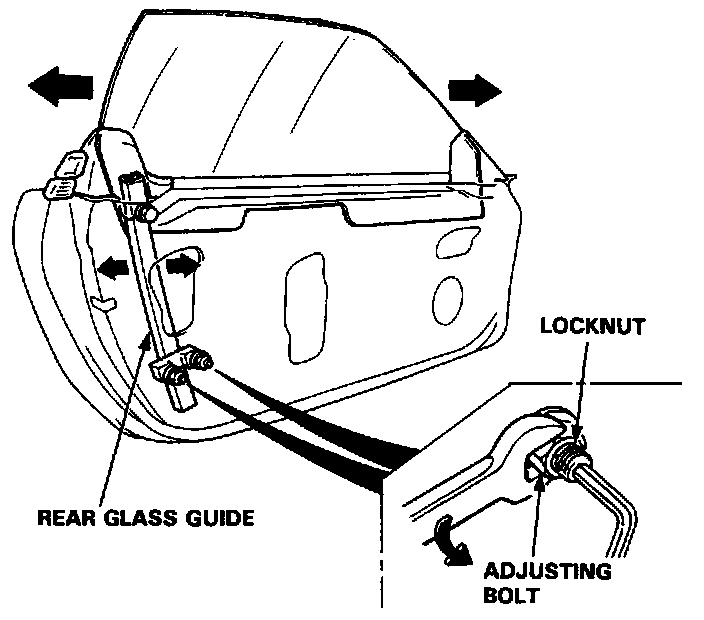
- 3 Loosen the nuts securing the rear glass guide and adjust the glass fore and aft by moving the glass guide.
NOTE: Hold the adjusting bolts with a hex wrench when loosening the lower glass guide locknuts.
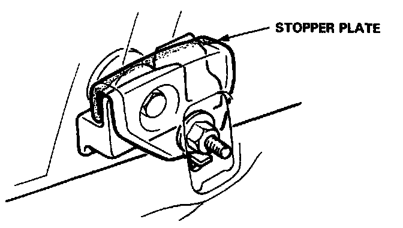
- 4 Loosen the nut securing the stopper plates and adjust so that the clearance "H" at the locations is within the specified value.
NOTE: Check that the stopper plates contacts the glass evenly.
- 5 Repeat the steps - 2 thru - 4 until the clearance "H" is within the specified limits, then retighten the regulator, glass guide, and stopper plates securely.
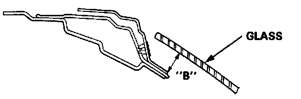
12. Adjust the clearance "B" as follows.
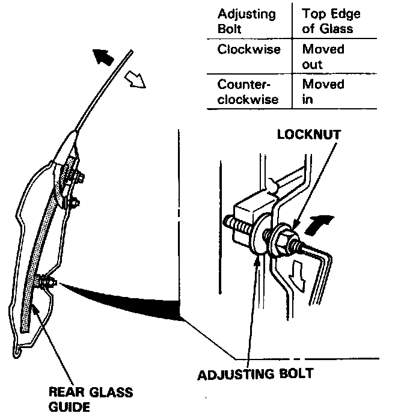
- 1 Loosen the bottom glass guide locknuts and turn the adjusting bolts until the clearance "B" is within the specified value.
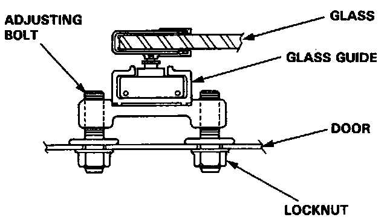
NOTE: Turn the front and rear adjusting bolts the same amount so as to keep the glass guide bracket parallel with the seating surface of the door panel.
After tightening the adjusting bolts, make sure that the ends of the bolts still project out of the locknuts.
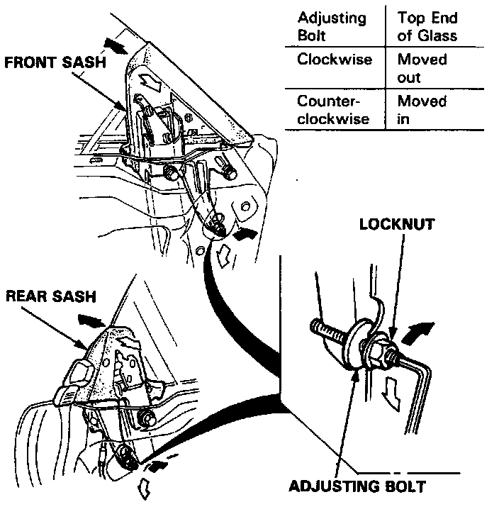
- 2 Align the front sash and rear sash with the glass with the adjusting bolts at the bottom of the sashes.
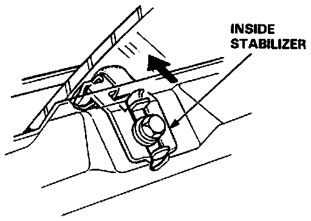
- 3 Adjust and set the front and rear stabilizers in the positions which will ensure correct clearance "B", then retighten the stabilizer bolts securely.
- 4 Move the glass up and down to seat it, then measure the clearance "B" at the designated locations.
- 5 Align the front sash and rear sash with the glass, then tighten the attaching nut securely.
- 6 Again measure the clearance "H" to make sure it is still within the specified limit at the designated locations.
NOTE: Repeat the above steps until the correct clearances are obtained.
13. After the clearances have been adjusted properly, reinstall the weatherstrip.
14. Reinstall the door trim.
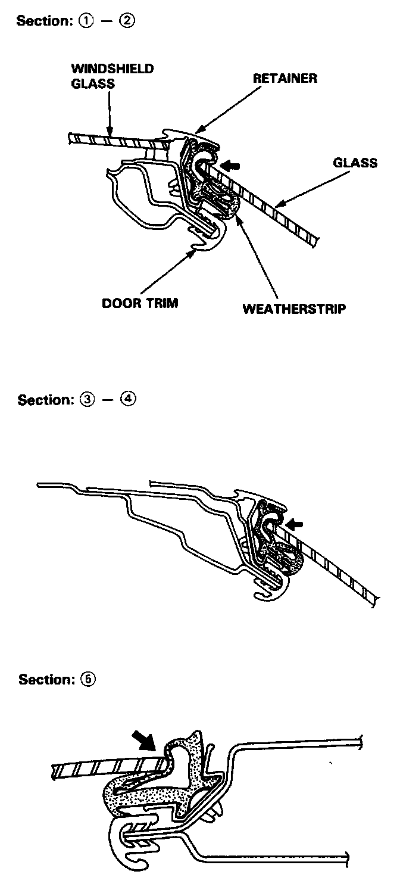
15. With the door and glass closed fully, check that the weatherstrip is not pinched by the door glass.
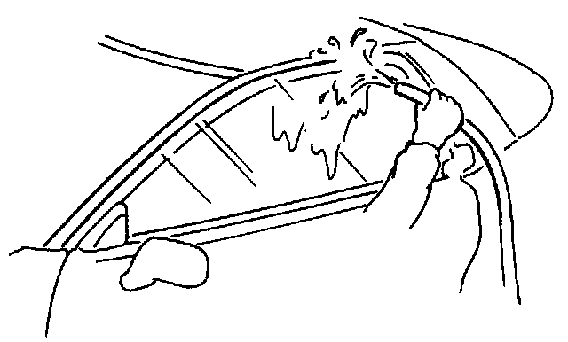
16. With the door and glass closed fully, check for water leaks.
NOTE: Do not use high pressure water.
17. Install the control switch panel in the door panel.
18. Install the door harness.
19. Attach the plastic cover, and install the door panel.
20. Check for air leaks.